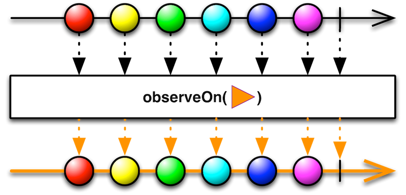
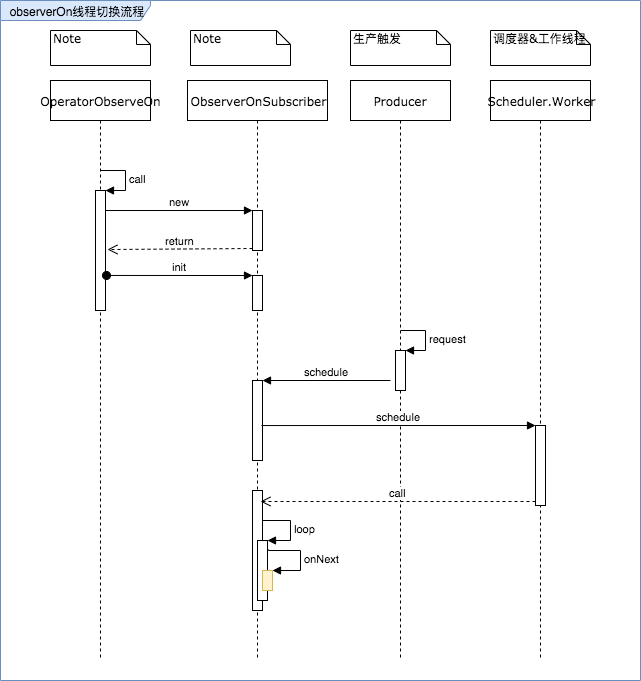

observeOn挂载机制
在分析完subscribeOn后，我们在分析下另一个常用的线程切换操作observerOn。根据使用API和经验，我们知道他的作用就是切换线程，并使得其后的操作符均在他的线程上执行。
注意这张图和subscribeOn的很像，唯一区别是不能作用于事件发射，所以源头的箭头是黑色的，他只能改变下游所在的线程。

下面我们分析下他是如果实现的线程切换。
挂载流程-OnSubscribeLift
observeOn的开篇和subscribeOn有些差异，对比下两个API的调用函数，可以看到observeOn多了一层lift处理。
public final Observable<T> observeOn(Scheduler scheduler, boolean delayError, int bufferSize) {
if (this instanceof ScalarSynchronousObservable) {
return ((ScalarSynchronousObservable<T>)this).scalarScheduleOn(scheduler);
}
return lift(new OperatorObserveOn<T>(scheduler, delayError, bufferSize));
}
public final Observable<T> subscribeOn(Scheduler scheduler, boolean requestOn) {
if (this instanceof ScalarSynchronousObservable) {
return ((ScalarSynchronousObservable<T>)this).scalarScheduleOn(scheduler);
}
return unsafeCreate(new OperatorSubscribeOn<T>(this, scheduler, requestOn));
}
在observeOn之后，对应的Observable的OnSubscribe成员实现类是OnSubscribeLift，他的作用我们可以望文生义一下，Lift有搬运的意思，代表了observeOn将任务搬运到不同线程执行的意思。
他的call方法并没有真正的线程切换逻辑，OnSubscribeLift是一个中间层，构造的时候需要传入一个OnSubscribe对象，一个Operator对象，然后会执行传入对象的call方法。因此我们需要继续分析传入的OnSubscribe对应的实现类。
@Override
public void call(Subscriber<? super R> o) {
try {
Subscriber<? super T> st = RxJavaHooks.onObservableLift(operator).call(o);
try {
// new Subscriber created and being subscribed with so 'onStart' it
st.onStart();
parent.call(st);
} catch (Throwable e) {
// localized capture of errors rather than it skipping all operators
// and ending up in the try/catch of the subscribe method which then
// prevents onErrorResumeNext and other similar approaches to error handling
Exceptions.throwIfFatal(e);
st.onError(e);
}
} catch (Throwable e) {
Exceptions.throwIfFatal(e);
// if the lift function failed all we can do is pass the error to the final Subscriber
// as we don't have the operator available to us
o.onError(e);
}
}
挂载流程-OperatorObserveOn
传入的OnSubscribe其实是上一个Observable的成员，这里分析要转向Operator的实现类，也就是OperatorObserveOn。
我们省略线程之外的调用流程，从OperatorObserveOn被call，到线程切换并执行后续操作符的大致流程如下图。

ObserveOnSubscriber被创建后，执行init方法，其中设置了一个Producer，根据断点分析，当我们订阅Observable后，Producer的request方法被触发执行。
void init() {
// don't want this code in the constructor because `this` can escape through the
// setProducer call
Subscriber<? super T> localChild = child;
localChild.setProducer(new Producer() {
@Override
public void request(long n) {
if (n > 0L) {
BackpressureUtils.getAndAddRequest(requested, n);
schedule();
}
}
});
localChild.add(recursiveScheduler);
localChild.add(this);
}
schedule方法会将将Action0挂载到传入的Scheduler上执行,这里的this即为ObserveOnSubscriber自身，他实现了Action0接口。
protected void schedule() {
if (counter.getAndIncrement() == 0) {
recursiveScheduler.schedule(this);
}
}
在Action0的call得到执行时，当前线程处于调度器指定的线程，内部通过一个无限循环开始执行onNext，也就是Observable之后的每个操作符。
// only execute this from schedule()
@Override
public void call() {
long missed = 1L;
long currentEmission = emitted;
// these are accessed in a tight loop around atomics so
// loading them into local variables avoids the mandatory re-reading
// of the constant fields
final Queue<Object> q = this.queue;
final Subscriber<? super T> localChild = this.child;
// requested and counter are not included to avoid JIT issues with register spilling
// and their access is is amortized because they are part of the outer loop which runs
// less frequently (usually after each bufferSize elements)
for (;;) {
long requestAmount = requested.get();
while (requestAmount != currentEmission) {
boolean done = finished;
Object v = q.poll();
boolean empty = v == null;
if (checkTerminated(done, empty, localChild, q)) {
return;
}
if (empty) {
break;
}
// localChild.onNext最终指向了具体的操作符实现
localChild.onNext(NotificationLite.<T>getValue(v));
// ...省略
}
}
小结
总结一下observeOn的知识点：
observeOn作用是切换线程，并使得其后的操作符均在他的线程上执行
实现的核心类是OperatorObserveOn，通过内部类ObserveOnSubscriber完成在指定Scheduler上提交任务的动作
不统一subscribeOn，observeOn每次作用每次生效，作用域下游，因此不能用于事件发射源（上游）